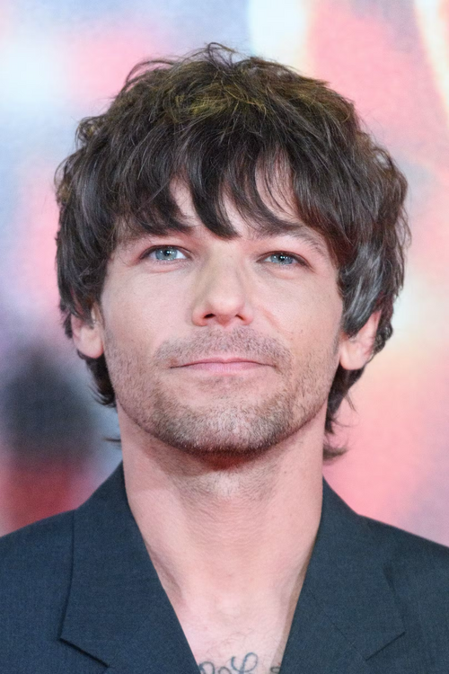

Harry Styles
Born: February 1, 1994
Harry Styles is a British singer, songwriter, and actor who rose to fame in the boy band One Direction before launching a successful solo career. Known for his diverse musical style that blends pop, rock, and soft rock, he has also starred in films like Dunkirk and Don't Worry Darling. Styles is also recognized for his flamboyant fashion sense and is a four-time Grammy winner.

Niall Horan
Born: September 13, 1993
Niall Horan is an Irish singer-songwriter who rose to fame as a member of the band One Direction before launching a successful solo career. He is known for his guitar-playing, soft rock and pop music, and charismatic personality, often performing with instruments like the guitar and piano. Horan is also a coach on The Voice and has released three solo albums: Flicker (2017), Heartbreak Weather (2020), and The Show (2023).

Liam Payne
Born: August 19, 1993
Liam Payne was an English singer, songwriter, and member of the band One Direction. Born in 1993, he gained fame on The X Factor before the band's formation, and after the group's hiatus, he pursued a solo career with hits like "Strip That Down". He was known for his vocal and songwriting contributions and passed away in October 2024 at the age of 31. .

Louis Tomlinson
Born: December 24, 1991
Louis Tomlinson is an English singer-songwriter and actor, born on December 24, 1991, who first gained fame as a member of the boy band One Direction. After the band's hiatus, he launched a successful solo career, releasing two albums, Walls (2020) and Faith In The Future (2022), and appearing as an X Factor judge.

Zayn Malik
Born: January 12, 1993
Zayn Malik is a British singer and songwriter who rose to fame as a member of the band One Direction before launching a successful solo career. Known for his R&B and pop music, he is recognized for his distinctive vocal style and fashion-forward image. His professional life includes a successful solo debut album, "Mind of Mine," and he has also engaged in fashion and acting projects.